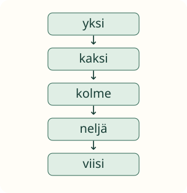

Loikan laskuloru

Loikka tarvitsee retkelle laskulorun. Mikä sana tulee aina seuraavaksi?
Tavoite: sanon lukusanat oikeassa järjestyksessä.
Loikka tarvitsee retkelle laskulorun. Mikä sana tulee aina seuraavaksi?
Tavoite: sanon lukusanat oikeassa järjestyksessä.
Taputa rauhassa. Sano tai ajattele: yksi, kaksi, kolme, neljä, viisi. Sanat pysyvät samassa järjestyksessä.

Loikka sanoo: yksi, kaksi, neljä. Pysähdytään. Kahden jälkeen tulee kolme. Korjattu loru on yksi, kaksi, kolme, neljä.
Aava keinuu ja aloittaa sanasta kolme: kolme, neljä, viisi. Seuraavaksi tulee kuusi. Paikka ja aloitussana vaihtuivat. Sanojen järjestys säilyi.
Mieti hetki: jos taputat hitaammin, tuleeko kahden jälkeen silti kolme?
Voit edetä itse tai käynnistää rauhallisen näytön.
Yksi → kaksi → kolme → neljä → viisi.
Valitse sanat alusta alkaen. Voit korjata ennen tarkistusta.
Oma loru odottaa.
Rakenna oma loru.
Aava sanoo: neljä, viisi, kuusi. Mikä tulee seuraavaksi?
Valitse vastaus.
Sano alusta: yksi, kaksi, kolme. Voit seurata kuvan nuolia sormella. Aikuinen voi lukea sanat.
Aloita kahdesta ja jatka seitsemään. Kerro, mitä sanaa seuraa neljä.
Harjoittele ensin sanoilla 1–5, sitten 1–10. Taputus ja sanat ovat konkreettinen tapahtuma; laput ovat sen esitys. Lapsen puhetta ei tarkisteta laitteella. Lukemisen voi hoitaa aikuinen. Älä päättele valinnasta esineiden laskutaitoa. Esineiden vierailujärjestys on eri asia kuin lukusanojen järjestys.
Ilman laitetta: vaihdelkaa taputuksen tahtia ja jatkakaa samaa lorua. Lopuksi kysy: mikä sana tulee kolmen jälkeen?
Lopuksi: yksi, kaksi, kolme… miten jatkat?